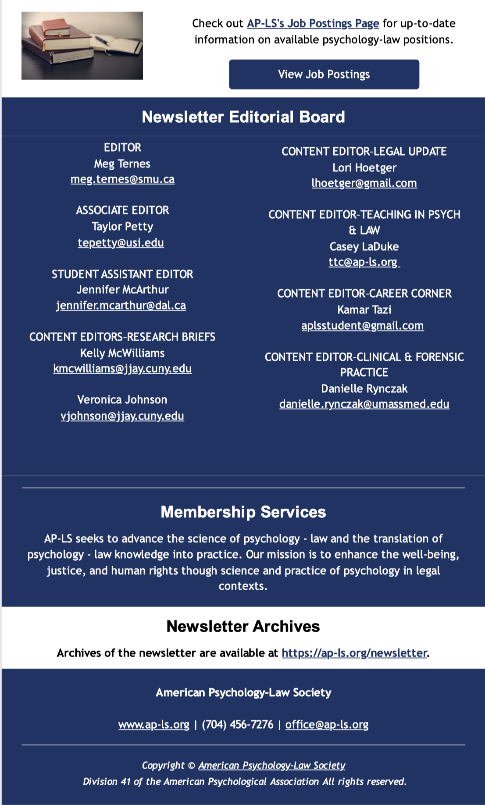

Psychology, Public Policy, & Law: Call for Editorial Fellows ***Applications due today***
Psychology, Public Policy, & Law seeks 2 editorial fellows for a 12-month term beginning 1/1/24. Position includes a stipend of $1,000 USD per fellow. These positions are for early-career psychologists from historically underrepresented groups. Apply by November 1, 2023. For more information and to apply: https://www.apa.org/pubs/journals/resources/call-editorial-fellowships
Psychology, Public Policy, & Law: Call for Editorial Board Members
Psychology, Public Policy, & Law seeks applications for the incoming editorial board. This open call for editorial board members (Associate Editor(s), Consulting Board Members, Principal Reviewers, and Ad Hoc Reviewers) is intended to build a highly diverse editorial team with broad relevant expertise. The position descriptions and qualifications required for each role are detailed HERE. Application Deadline: November 15, 2023
New Edition of the Guide to Graduate Programs in Forensic and Legal Psychology
The AP-LS Teaching, Training, and Careers (TTC) Committee has updated the Guide to Graduate Programs in Forensic and Legal Psychology. The guide, now in its 6th edition, is intended to serve as a resource for prospective students interested in furthering their graduate training and education in psychology and law. The guide contains information on doctoral programs (Ph.D. and Psy.D.), joint programs (e.g., Ph.D./J.D., J.D./M.A.), and masters-level programs. The 6th edition of the Guide can be found on the AP-LS website: https://www.apls-students.org/resources.html
Outstanding Teaching and Mentoring in the Field of Psychology and Law: Call for Nominations
Each year the AP-LS Teaching, Training, and Careers (TTC) Committee confers two awards for outstanding teaching and mentoring. These awards recognize teaching excellence in the field of psychology and law in a variety of contexts, specifically through the Outstanding Teaching and Mentoring Award and the Early Career Teaching and Mentoring Award.
For more information about the awards, eligibility, and how to nominate yourself or others, please click: Teaching and Mentoring Awards This year the TTC Committee is specifically soliciting nominations for individuals from a program/department that is undergraduate-only or MA-terminus (i.e., Category 2).
Winners will be announced at the 2024 AP-LS Conference. Award recipients receive $500, a plaque at the AP-LS conference, and the option to serve as a guest columnist for the AP-LS Newsletter.
Nominations are due by December 15, 2023. Nominations should be emailed to: ttc@apls.org
Early Career Professionals Speaker Series
For the month of November, the ECP is soliciting volunteers to participate in our speaker series with a focus on Antiracism. Do you consider yourself an antiracist practitioner, educator, or researcher? Then we would love to hear about you and your work! The interviews will be recorded and posted to the AP-LS youtube channel. If you are interested in participating, please email ecp@apls.org. Participants will receive a $100 honorarium.
Early Career Professionals Speaker Series
For the month of November, the ECP is soliciting volunteers to participate in our speaker series with a focus on Antiracism. Do you consider yourself an antiracist practitioner, educator, or researcher? Then we would love to hear about you and your work! The interviews will be recorded and posted to the AP-LS youtube channel. If you are interested in participating, please email ecp@apls.org. Participants will receive a $100 honorarium.
Practice Committee’s Mentorship Award: Call for Nominations
The Practice Committee’s Award for Outstanding Practitioner Mentoring for the Elimination of Racial, Ethnic, and Cultural (REC) Disparities recognizes practitioners whose mentorship helps reduce REC disparities in psychology and the law. Practitioners are in a unique position to offer education, assessment, intervention and advocacy on issues of REC disparities, racism, and discrimination in the legal systems. However, a limited body of research, lack of practice guidelines on REC integration in forensic practice, and low representation of Black, Indigenous, People Of Color (BIPOC) professionals, limit such efforts. Mentorship of emerging practitioners in psychology and the law on such issues can bridge the gap of knowledge, application, and BIPOC representation in the field.
The Practice Committee is currently accepting award nominations for 2024. Additional information about the award can be found at: https://ap-ls.org/awards/. Nomination packages are due January 15th and should be emailed to the chair of the award subcommittee at practice@ap-ls.org.
Keep AP-LS’S Voice Heard at APA
Members of the American Psychological Association (APA) should receive their 2023 APA Ballot via e-mail on November 1. It is important that you promptly vote to keep AP-LS’s voice heard within APA.
The ballot will include votes on APA bylaws changes and an apportionment ballot which determines how many voting members AP-LS gets on APA’s governing body, the Council of Representatives (Council). In the past year, your AP-LS Council representatives (Margaret Bull Kovera and Jason Cantone) successfully passed APA legislation regarding the removal of mental health treatment questions from bar exam character and fitness examinations and submitted legislation for APA to oppose involuntary solitary confinement of juveniles in justice settings as well as legislation to better support parents with disabilities, including in child custody and foster care settings.
Each APA voting member is given 10 apportionment votes to allot across APA divisions and state provincial and territorial psychological associations (SPTAs). We ask that you give all ten of your votes to Division 41 / AP-LS. With more votes, we can obtain a third AP-LS Council representative seat to better address the many research and practice issues that matter to AP-LS. Please make sure to vote! If you are an APA member and do not receive an apportionment ballot, contact elections@apa.org.
Clinicians’ Travel Grants: Call for Applications
Description:
The Practice Committee is sponsoring twenty (20) Clinicians’ Travel Grants (CTG) to address disparities in access to funds available to clinicians to attend the AP-LS conference.
Psychologists in academia often have paid time off and can receive university sponsored funds to cover costs associated with attending conferences. On the other hand, practitioners, especially those who work solely in private practice, often lack comparable levels of support. In addition to the costs associated with travel, clinicians may incur a loss of income when they attend a conference. The CTG will address the unique financial barriers clinicians face that make it difficult for them to attend the conference.
Eligibility:
Eligible individuals must be AP-LS members. Any practicing psychologist, starting from the Post-Doctoral, Early Career, Mid and Advanced career level, may apply. The applicants will have to self-identify as primarily practicing psychologists (defined below) in the field of psychology and the law. For this purpose, a practicing clinician spends at least 75% of their work week providing direct services associated with psychology and the law or they are in a postdoctoral program training to become a practitioner in the area of psychology and the law.
Preference will be given to psychologists at any level who do not have or have limited institutional support to attend conferences, such as private practitioners or practitioners in public non-academic institutions. Special preference may be given to practicing psychologists who are presenting at the conference and have not previously been granted the grant. The funds shall be used for travel costs associated with attending the AP-LS conference exclusively.
Degree of support:
The maximum amount of support provided by the grant will vary depending on the amount of support needed or requested. It will also depend on the applicant’s stage of career:
Post-doctoral applicants may apply for a $600 maximum amount of support.
Early-career applicants may apply for a $500 maximum amount of support.
Mid to Advanced Career applicants may apply for a $400 maximum amount of support.
Application Process:
- Applications are due by December 1, 2023
- Complete the CTG application at: tinyurl.com/CTGapplication
V. Contact practice@ap-ls.org, if you have any questions.
Call for Applications: Embracing Leadership: Developing Skills for Your Career Evolution
The American Psychology-Law Society is starting a leadership development program. Embracing Leadership is designed to provide our members with practical training in leadership and with leadership opportunities. The goals of the program are:
Provide training for interested members in a variety of leadership skills that could benefit their careers broadly
Cultivate interest in leadership within the Division
Provide leadership opportunities within the Division
Prepare our members to take on leadership challenges
Embracing Leadership will have four activities that will take place over one year, beginning in March 2024. These activities include:
A workshop on leadership on the Wednesday prior to the AP-LS conference
Webinars on leadership topics that may be eligible for CE credit (~1 per month)
Connecting participants to a mentor already in leadership in the Division
Providing opportunities for leadership within the Division by completing an initiative with AP-LS leadership
Applicants are welcome from all career levels, including applicants who are students, ECPs, mid-career, and beyond.
To apply, please fill out the Qualtrics survey linked here (https://scrippscollege.az1.qualtrics.com/jfe/form/SV_6usN0qp8SBVbSe2), where you will upload your CV and statement of interest. The statement of interest should provide a brief summary (up to 500 words) of where you are in your career, what interests you about leadership development, what leadership roles you have had, and what (if any) leadership roles you would like to obtain in the future.
Applications are due November 1, 2023.
**Note: As part of the application process, some basic demographic information will be collected through the Qualtrics survey that can be used to track applicants and participants as part of the evaluation of the program. It will help us determine who applies and who is accepted.
Caregiving Grants for AP-LS 2024
The AP-LS Professional Development of Women Committee is thrilled to offer Caregiving Grants of $500-$750 for 20-30 attendees of AP-LS 2024 in Los Angeles, with priority to first authors, presenters, students, and early career professionals. This grant is open to any AP-LS member (student and non-student) who serves as a caregiver in any capacity (e.g., child, parent). Funds can be used for any caregiving needs that arise during the conference, including needs at the conference or at home. Please apply at: https://universityofalabama.az1.qualtrics.com/jfe/form/SV_4Jilv1WU81DVrGm
Deadline to apply: December 31, 2023. We will notify grantees in February 2024. Please contact Jenni Cox (Jennifer.m.cox@ua.edu) with any questions.
Recognizing Excellence: AP-LS Dissertation Awards 2023
Attention psychology and law scholars! The American Psychology-Law Society (APLS) invites you to apply for the 2023 Dissertation Awards.
📌 Eligibility: Open to students who complete dissertations involving basic or applied research in psychology and law.
🥇 Rewards: 1st, 2nd, and 3rd place recognitions. Cash prizes. Presentation opportunities at AP-LS conference.
📅 Deadline: Submit by December 31, 2023.
🔗 Learn more: https://ap-ls.org/awards/awards/dissertation
📧 Questions? Contact the Dissertation Award Committee Chair, Dr. Alicia NijdamJones at alicia.nijdam-jones@umanitoba.ca.
AP-LS Book Award: Call for nominations
The AP-LS Book Award Committee invites nominations to recognize outstanding scholarship in psychology and law. This year we are accepting nominations for edited books published in 2021 and 2022. The deadline for nominations is November 15th, 2023. Nominations (including self-nominations) and e-versions of the book should be sent to the Chair of the Committee: Elizabeth Foster, PhD eefoster@widener.edu. The award rotates annually between edited and authored books.
Archived AP-LS Conference Programs
Please see our ongoing AP-LS archive project progress at the conference archive page to browse previous conference programs! One of our website projects this year is to gather all previous conference programs, as far back as they go digitally (before we begin scanning older ones to pdf). If you have a conference program dating from 2013 or earlier, please send it to Lindsey Wylie, website editor at webmaster@apls.org. Thank you!
Apply to become a Fellow or Distinguished Member of AP-LS
According to our bylaws, “Full Members nominated for Fellow in the Society must provide evidence of unusual and outstanding contributions in the area of psychology and law. All candidates for Fellow must be endorsed by at least two Fellows of the Society. In addition, all candidates for Fellow must meet the requirements of the bylaws of the Association. Full Affiliates nominated for Distinguished Member in the Society must provide evidence of unusual and outstanding contributions in the area of psychology and law. All candidates for Distinguished Member must be endorsed by at least two Fellows or Distinguished Members of the Society.”
Members nominated for Fellow or Distinguished member status through AP-LS must provide evidence of unusual and outstanding contributions in the area of psychology and law. The deadline for receipt of all application materials (nominee’s materials and endorsers’ materials) is Dec. 1. For Fellow status (unless you are already a Fellow in another division), apply through the APA Fellow portal (https://www.apa.org/members/your-membership/fellows/apply). For Distinguished Member status and if you are already a Fellow in another APA division, email materials to ebrank2@unl.edu.
For more information about criteria for becoming a Fellow, see this page: https://www.apa.org/members/your-membership/fellows/division-41.pdf
Call for Book Proposals
The American Psychology-Law Society invites proposals for new titles in its book series, which is now published by APA Books. We publish authored and edited volumes on current issues at the intersection of psychology and law. Books are typically a state of the science synthesis of a body of existing research with implications for practice and/or policy. Authors and editors should have a substantial and recent track record of publication and/or practice in psychology or law, and at least one should hold a doctorate in psychology or closely related behavioral science. If you have a proposal for a new book in the series or you would simply like more information, reach out to a member of the editorial team. We would be happy to tell you more.
The editorial board members are:
Monica Miller, Division 41 Book Series Editor (mkmiller@unr.edu)
Monique Bowen, Division 41 Book Series Associate Editor (mbowen2@antioch.edu)
Jemour Maddux, Division 41 Book Series Associate Editor (jm@rule702.com)
Executive Committee
For more information or if you wish to contact a member of the AP-LS Executive Committee, details can be found here.
On The Job or Postdoc Market? AP-LS Job Postings Check out AP-LS’s Job Postings Page for up-to-date information on available psychology-law positions.
